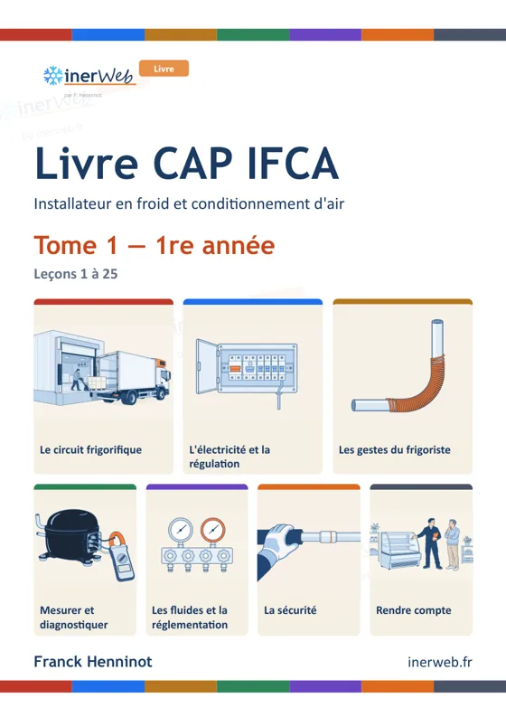
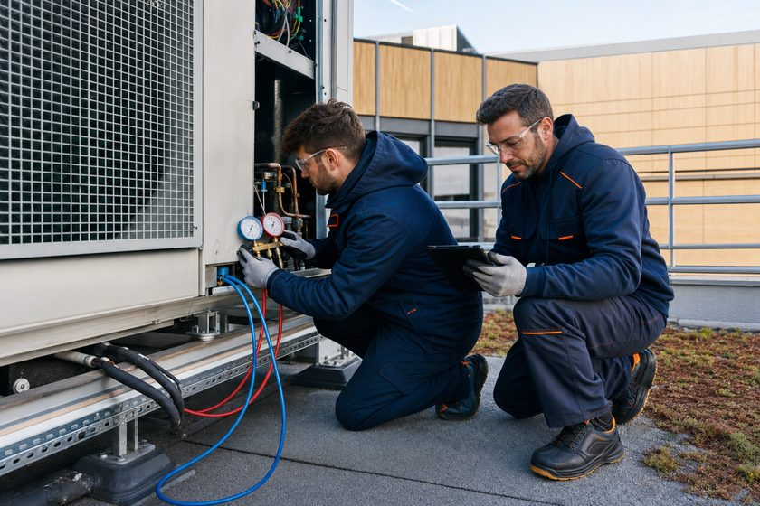

Découvrir inerWeb : le parcours enseignant
En une vingtaine de minutes, comprenez ce qu’est inerWeb, ce qu’il peut apporter à vos cours et comment vous en servir demain avec vos élèves. Ce parcours est fait pour les enseignants, les formateurs et toute personne qui enseigne le froid, la climatisation et les énergies. Chaque étape ouvre la ressource dans un nouvel onglet : ce parcours reste ouvert, et il retient ce que vous avez déjà vu.
inerWeb évolue encore chaque semaine. Les livres sont pour l’instant proposés en extraits : ils seront édités et publiés dès qu’ils auront été relus, corrigés et reliés. Le système est publié et en phase de test : vos retours sont attendus avec impatience (inerweb.fh@gmail.com).
Vous êtes…
Choisissez votre profil : les étapes conseillées pour vous seront signalées. Toutes restent ouvertes.
Le principe : des cours rangés comme des lignes de métro
★ Conseillé pour vous
- Projetez « Du glaçon au circuit » pour ouvrir une séquence sur le circuit frigorifique.
- Les élèves suivent la même station sur leur téléphone, à leur rythme, avec la voix.
Entrer par la vue 3D : le quartier technique
★ Conseillé pour vous
- En début d’année ou en 2de, faites une balade au tableau : « qui travaille sur cet appareil ? ».
- Complétez avec la page Le métier : cinq familles de métiers du froid, en images.
Trouver une ressource en trente secondes
★ Conseillé pour vous
- La recherche de l’accueil : tapez un mot du métier (« surchauffe », « manifold », « huile »).
- Le plan : toutes les lignes et leurs stations, pour bâtir une progression.
- Le catalogue : toutes les ressources, avec les badges « hors ligne » (marche sans réseau) et « imprimable » (document élève intégré).
Les réseaux de cours, un par domaine
★ Conseillé pour vousChaque carte dit à quoi sert le réseau et ce que vous pouvez en faire demain en classe. Filtrez par niveau :
Chargement des réseaux…
Les réseaux marqués « en relecture » sont en ligne et utilisables ; leur auteur les relit encore.
Le dépannage : SimuRézo
★ Conseillé pour vous
- Projetez une panne : la classe relève les valeurs et conclut ensemble.
- Puis chacun refait une autre situation seul, au niveau qui lui convient.
- Sans réseau à l’atelier ? Le simulateur se télécharge en un seul fichier.
Le câblage électrique : le Câblage virtuel
★ Conseillé pour vous
- Distribuez le tutoriel de prise en main, puis lancez le premier exercice en mode aide.
- L’espace professeur propose trois usages : 30 minutes, un TP de 4 heures, une année.
La régulation : cours, films et réglages
★ Conseillé pour vous
- Projetez la station sur la régulation, puis le film du même sujet.
- Faites régler les pressostats sur le jeu de poste : on calcule, on règle, puis on vérifie à l’instrument.
Les gestes d’atelier : CuivRézo et Le tour de main
★ Conseillé pour vous
- Une tablette par poste, ouverte sur la station du jour, et la fiche de poste imprimée.
- Espace professeur CuivRézo (mode d’emploi)
- Fiches de poste · Passeport élève · Dossier professeur
Les films : inerWeb Studio et la chaîne YouTube
★ Conseillé pour vous
- Ouvrez une séance sécurité par un épisode de « Ça aurait pu mal finir », puis faites dire ce qui aurait dû être fait.
Réviser : les jeux et les QCM
★ Conseillé pour vous
- Dix minutes de Memory ou de QCM éclair pour fixer la notion du jour.
- En septembre : le test de positionnement pour savoir d’où part chaque élève.
Les programmes et les utilitaires
★ Conseillé pour vousDes outils à côté des cours : pour calculer, mesurer, tracer, s’entraîner sur un thème précis.
RézoTools — les calculettes
COP, pincement, incondensables, débit d’air, diagnostic, identification d’un fluide… sur des tables de fluides vérifiées. Demain : le calcul du COP pendant un TP de mesure.
Ouvrir RézoTools ▸inerWeb AquiBlue
Relever des mesures par Bluetooth et les voir sur le diagramme. Une démonstration en ligne, un logiciel à télécharger. Demain : la démo au tableau.
Découvrir AquiBlue ▸inerWeb Fluide
La traçabilité des fluides frigorigènes (fiches d’intervention, bordereaux). En bêta-test : centres de formation et professionnels bienvenus.
La présentation (PDF) ▸Sous tension
Des TD d’électricité prêts à l’emploi : fondamentaux, tableau électrique, cas particuliers, triphasé, et une évaluation.
Les TD ▸L’affiche des cinq risques
Une affiche au format A2 à imprimer pour l’atelier : les cinq risques du métier, en un coup d’œil.
Voir l’affiche ▸Les liens courts
Des adresses faciles à dicter ou à écrire au tableau : inerweb.fr/s/diagramme (le diagramme enthalpique du R134a en autonomie), inerweb.fr/s/r134a (je fais bouillir du R134a).
Essayer ▸Préparer une habilitation
★ Conseillé pour vous
- Fluides frigorigènes (attestation d’aptitude) : l’application de formation, un test d’entrée « Par où commencer ? », et le livre HabFluide (extrait).
- Électrique (B0 à BR) avec HoCourant, et son livret élève A5.
- Échafaudages de pied (R408), et son livret élève A5.
- Une classe qui arrive en habilitation fluides : passez le test d’entrée, chacun sait par où commencer.
Formateur d’un centre d’habilitation fluides ? Le portail du dispositif réunit le planning, la projection et le dossier.
Les livres inerWeb
★ Conseillé pour vous
- Distribuez un extrait à vos élèves pour juger le manuel sur pièce, et dites ce que vous en pensez.
Votre première séance, dès aujourd’hui
★ Conseillé pour vous
- Projetez la station au tableau, ou donnez son adresse (ENT, messagerie, tableau).
- Les liens courts se dictent : inerweb.fr/s/diagramme.
- Les élèves n’ont rien à installer et aucun compte à créer.
- Vous fabriquez un lien de séance et son QR à projeter ; chaque élève tape un code de 4 caractères donné sur un carton.
- En fin de séance, vous collez les codes de restitution des élèves et obtenez le tableau de la classe. Ces résultats servent à suivre, pas à noter.
- Le code enseignant est gratuit, personnel, valable un an. Il ouvre aussi les documents professeur de certains produits.
Votre avis fait avancer inerWeb
★ Conseillé pour vousCe qui vous reste à voir
Cochez « C’est vu » au fil des étapes : votre avancement est gardé dans ce navigateur.
inerWeb évolue encore. Les livres sont en extraits en attendant leur édition. Le système est en test : vos retours sont attendus avec impatience.